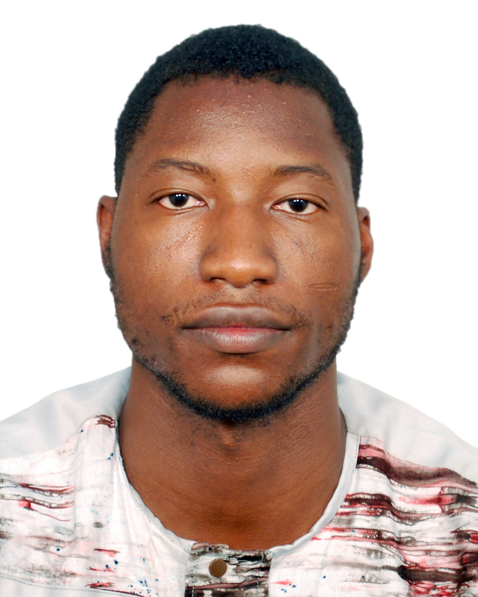

Hi, I am an applied Machine Learning researcher focused on developing and prototyping cutting-edge algorithms for medical imaging and healthcare applications.
I am currently a Master’s student in Applied Mathematics at AIMS Senegal, specializing in Probabilities, Statistics, and Machine Learning, with a particular interest in reinforcement learning, deep learning, and graph neural networks. My research focuses on applying advanced AI techniques to medical imaging, including brain tumor classification from MRI data.
Research
Previously, I received my Bachelor’s degree in Mathematics from [indique ton université de Bachelor] and gained professional experience in [optionnel : ton expérience professionnelle si tu veux l’inclure].
More information about my work can be found on the Projects page. My resume is available here.
Overall, my research expertise lies in Deep Learning, Computer Vision, and Medical Image Analysis, including segmentation, uncertainty, semi-supervised learning, weakly-supervised learning, representation learning, interpretability, calibration, image retrieval, image enhancement, generative adversarial network, generative AI, and geometric deep learning.